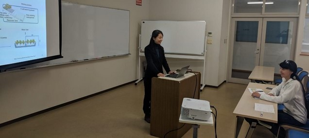
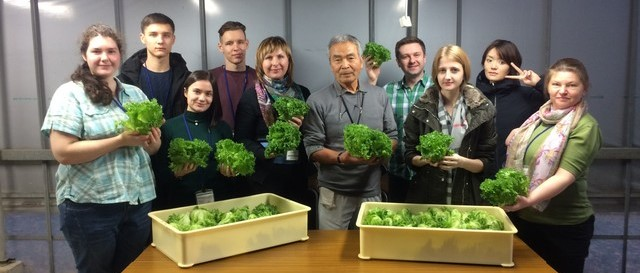

-
Выставка "Обучение в Японии" в Хабаровске
Принятие участие в выставке "Обучение в Японии" в городе Хабаровск.
-
Симпозиум "Садоводство"
Организовывается Chiba University
-
Преподователь из Приморской Государственной Сельскохозяйственной Академии приехал на курс повышения квалификации
За время курса были получены дополнительные знания по работе с питательными среда для выращивания растений в мини Фабриках растений.
-
Приехали студенты по обмену из Сахалинского Государственного Университета

Вторая часть студентов из Сахалинского Государственного Университета на курс по программе FARM. За время курса были получены знания по работе на Фабриках растений с искуственным освещением.
-
Второй визит в Приморскую Государственную Сельскохозяйственную Академию

Вторая часть студентов из Chiba University приехали в Приморскую Государственную Сельскохозяйственную Академию.
-
Второй визит в Сахалинский Государственный Университет

Вторая часть студентов из Chiba University приехали в Сахалинский Государственный Университет.
-
Приехали студенты по обмену из Приморской Государственной Сельскохозяйственной Академии

Вторая часть студентов по обмену приехала из Приморской Государственной Сельскохозяйственной Академии на курс по программе FARM. За время курса были получены знания по работе на Фабриках растений с искуственным освещением.
-
Визит в Сахалинский Государственный Университет

Студенты из Chiba University приехали в Сахалинский Государственный Университет
-
Визит в Приморскую Государственную Сельскохозяйственную Академию

Студенты из Chiba University приехали в Приморскую Государственную Сельскохозяйственную Академию.
-
Первый бизнес форум в рамках программы FARM

В форуме приняли участие Японские эксперты, представители институтов, представители японского бизнеса и представители институтов из России.
-
Подписание договора о сотрудничестве с Сахалинским Государственным Университетом
Студенты и преподователи из Сахалинского Государственного Университета приехали в Chiba University. Подписан договор о сотрудничестве с Сахалинским Государственным Университетом.

-
Первые студенты по обмену приехали из Сахалинского Государственного Университета
Студенты из Сахалинского Государственного Университета приехали в Chiba University.
-
Первые студенты по обмену приехали из Приморской Государственной Сельскохозяйственной Академии

Первые студенты по обмену приехали на курс в рамках программы FARM. За две недели курса они познакомились с Фабриками растений с искуственным освещением и изучили некоторые аспекты их работы.
-
Визит представителей Chiba University в Приморскую Государственную Сельскохозяйственную Академию
Представители представителей Chiba University приехали в Приморскую Государственную Сельскохозяйственную Академию.
-
Подписание договора о сотрудничестве с Приморской Государственной Сельскохозяйственной Академией, г. Уссурийск
Делегация Приморской Государственной сельскохозяйственной академии приехала в Chiba University. Бал подписан договор о сотрудничестве в рамках программы FARM.

-
Начало программы FARM
Официальный старт программы
-
Обсуждение программы
С 2017 года было решено начать программу FARM. Программа должна была статровать в the Center for Environment, Health and Field Sciences, в Chiba University.